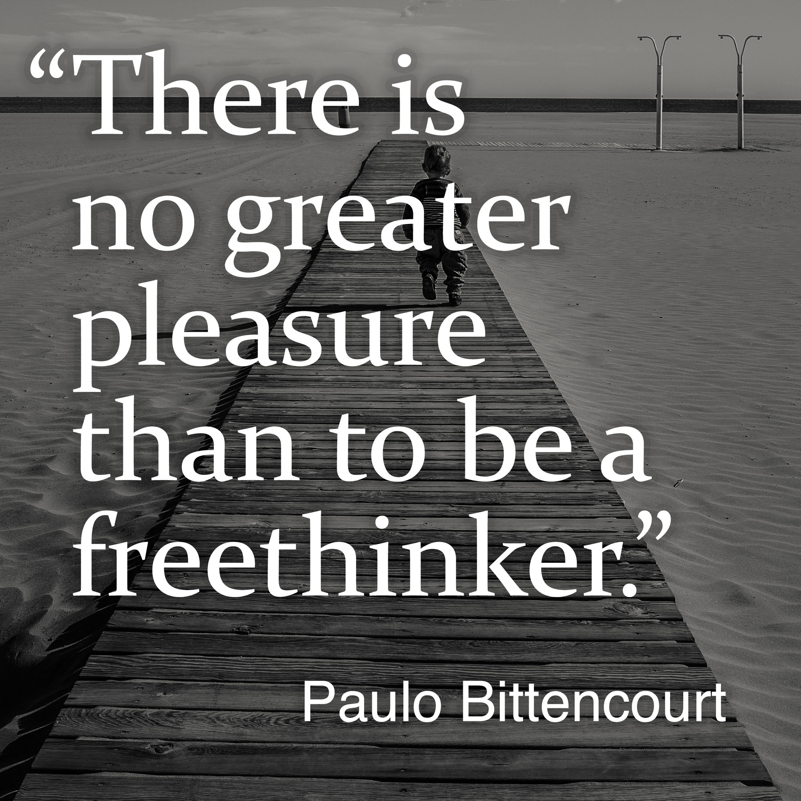

Have you been struggling with your faith, your belief in God? Have you started finding it illogical that you are endowed with critical sense, but, when it comes to religion, are considered a bad person when you make use of it? Have you come to realize that what your religion teaches is childish, nonsense, wrong or, in some cases, even evil? Do you feel oppressed by your religion’s constant threats of punishment, for example, torture in a lake of fire? Do you feel sad, or even depressed, because you no longer believe, but can’t tell your family, for fear of them being disappointed, or even angry, with you? Are your parents forcing you to go to church?
You are not alone.
These are real stories written by real people. They too went through what you are going through. Their testimonies may help you. Some I found on the internet, some were sent to me by readers of my books↗︎ Liberated from Religion and Wasting Time on God.
Enjoy!
